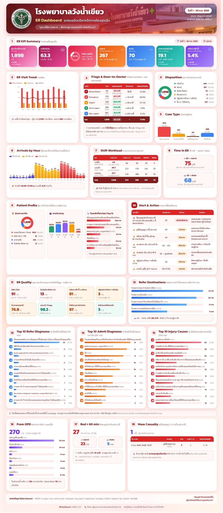

เว็บแอปที่ดึงข้อมูลห้องฉุกเฉินจากฐานข้อมูล HOSxP แบบสด แล้วแสดงเป็นอินโฟกราฟิกหน้าเดียว 18 บล็อก หัวหน้าห้องฉุกเฉินและผู้บริหารเปิดดูได้ทั้งบนคอมพิวเตอร์และมือถือ กรองตามเวรได้ และกดส่งออกเป็น JPG / PNG / PDF ไปใช้ในการประชุมได้ทันที
| # | บล็อก |
|---|---|
| 1 | ตัวชี้วัดหลัก — ผู้มา ER, เฉลี่ย/วัน, ระดับ 1-2, Admit, Refer, เวลาพบแพทย์, กลับมาซ้ำ ≤ 48 ชม. |
| 2–5 | แนวโน้มรายเดือน · Triage & เวลาพบแพทย์ · ผลการจำหน่าย · ประเภทผู้ป่วย |
| 6–8 | มาถึงรายชั่วโมง · ภาระงานรายเวร · เวลาใน ER → Admit / Refer |
| 9–10 | โปรไฟล์ผู้ป่วย · Alert & Action |
| 11–12 | คุณภาพบริการและการบันทึก · ปลายทางส่งต่อ |
| 13–15 | 10 อันดับโรคที่ Refer / Admit · 10 อันดับสาเหตุการบาดเจ็บ |
| 16–18 | ส่งมาจาก OPD · ผู้ป่วยระดับ 1 อยู่ ER เกิน 60 นาที · อุบัติเหตุหมู่ |
ผู้ป่วยที่เข้า ER ช่วง 16:00–20:00 น. และพยาบาลเป็นผู้ตรวจ — รายวัน / รายเดือน / รายปีงบประมาณ แยกงานบริการ (ทำแผล วัคซีน) ออกจากการตรวจ ส่งออก Excel ได้ · มีรหัสเข้าดู (หัวข้อ 8.4)

| รายการ | ข้อกำหนด |
|---|---|
| เครื่องเซิร์ฟเวอร์ | Linux (AlmaLinux / Rocky / RHEL 9, Ubuntu 22.04 ขึ้นไป) หรือ Windows 10/11/Server · CPU 2 core, RAM 2 GB, พื้นที่ว่าง 2 GB (ใช้ร่วมกับเครื่องที่มีอยู่แล้วได้) |
| Python | 3.9 ขึ้นไป |
| ฐานข้อมูล HOSxP | MariaDB / MySQL ที่เครื่องนี้ต่อถึงได้ พอร์ต 3306 · แนะนำให้ต่อเครื่อง Slave / Replica ไม่ใช่ฐานหลักที่ใช้ให้บริการ |
| การบันทึกของ ER | ห้องฉุกเฉินใช้ระบบ ER ของ HOSxP (er_regist มีเวลาเข้า ER) และลงระดับความเร่งด่วน |
| บัญชีฐานข้อมูล | สิทธิ์ SELECT อย่างเดียว (หัวข้อ 3) |
| เบราว์เซอร์บนเซิร์ฟเวอร์ | Chromium / Chrome / Edge — เฉพาะเมื่อต้องการปุ่มส่งออก |
er_dashboard-{{VERSION}}.zip จาก
github.com/nopneo/er-dashboard-wnk/releases ภายในมีโปรแกรม คู่มือนี้ INSTALL.md
SECURITY.md และ .env.example — ไม่มีรหัสผ่านหรือข้อมูลของโรงพยาบาลใดติดมาล็อกอินฐานข้อมูล HOSxP ด้วยบัญชีผู้ดูแล แล้วรัน (เปลี่ยน IP เป็นเครื่องที่ติดตั้งแดชบอร์ด):
CREATE USER 'er_ro'@'192.168.1.50' IDENTIFIED BY '<รหัสผ่านยาวอย่างน้อย 16 ตัว>'; GRANT SELECT ON hos.* TO 'er_ro'@'192.168.1.50';
unzip er_dashboard-{{VERSION}}.zip -d /opt && cd /opt/er_dashboard
python3 -m venv .venv && .venv/bin/pip install -r requirements.txtDB_HOST DB_USER DB_PASS
cp .env.example .env && nano .env
http://<IP เครื่อง>:6200/
.venv/bin/python app.py # Ctrl+C เพื่อหยุดuseradd -r -s /sbin/nologin erdash chown -R root:root /opt/er_dashboard chown root:erdash /opt/er_dashboard/.env && chmod 640 /opt/er_dashboard/.env
/etc/systemd/system/er-dashboard.service
[Unit] Description=ER Dashboard After=network.target [Service] User=erdash Group=erdash WorkingDirectory=/opt/er_dashboard ExecStart=/opt/er_dashboard/.venv/bin/gunicorn --bind 0.0.0.0:6200 --workers 3 --timeout 120 app:app Restart=always Environment=HOME=/var/lib/erdash StateDirectory=erdash NoNewPrivileges=true PrivateTmp=true ProtectSystem=strict ProtectHome=true [Install] WantedBy=multi-user.target
systemctl daemon-reload && systemctl enable --now er-dashboard systemctl status er-dashboard
dnf install chromium-headless)
ถ้าไม่ต้องการ ตั้ง ER_EXPORT=0 ใน .env เพื่อซ่อนปุ่มpython -m venv .venv .venv\Scripts\pip install -r requirements.txt copy .env.example .env & notepad .env .venv\Scripts\waitress-serve --listen=0.0.0.0:6200 app:app
ต้องการให้เปิดเองเมื่อเปิดเครื่อง ใช้ Task Scheduler หรือ NSSM ห่อคำสั่งสุดท้ายเป็นบริการ
docker build -t er-dashboard . # ไม่มีปุ่มส่งออก (image เล็ก) docker build --target export -t er-dashboard-export . # มี chromium docker run -d -p 6200:8080 --env-file .env --restart unless-stopped er-dashboard
| ค่า | ความหมาย |
|---|---|
DB_HOST DB_PORT DB_NAME DB_USER DB_PASS | ฐานข้อมูล HOSxP (บัญชีอ่านอย่างเดียว) |
PORT | พอร์ตของแอป (6200) |
ER_HOSPITAL_NAME / _EN | ชื่อโรงพยาบาล (ไม่ใส่ = อ่านจาก opdconfig) |
ER_CONTACT | ช่องทางติดต่อท้ายหน้า |
ER_DEPCODE | รหัสแผนก ER (ค่าเริ่มต้น 011) |
ER_NOT_DEPCODES | รหัสที่ไม่ใช่แผนกจริง (ค่าเริ่มต้น 999 = กลับบ้าน) |
ER_ST_DOCTOR_COL | คอลัมน์ service_time ที่ ER กด "เริ่มตรวจ" (ค่าเริ่มต้น service5) |
ER_RED_MAX_MIN | เกณฑ์ผู้ป่วยระดับ 1 อยู่ใน ER (60 นาที) |
ER_MCI_MIN / ER_MCI_WINDOW | อุบัติเหตุหมู่: ≥ 5 ราย ภายใน 60 นาที |
ER_BOARDING_MIN | เข้า ER → Admit/Refer เกินกี่นาทีถือว่านาน (120) |
ER_MAX_DAYS / ER_CACHE_TTL / ER_DB_TIMEOUT | ช่วงวันที่สูงสุด (366) · อายุแคช (120 วิ) · timeout ต่อคำสั่ง (60 วิ) |
ER_EXPORT | 0 = ปิดปุ่มส่งออก |
ER_NP_START / ER_NP_END | ช่วงเวลารายงานพยาบาลตรวจแทนแพทย์ (16:00 / 20:00) |
ER_NURSE_PROVIDER_TYPES | doctor.provider_type_code ที่นับเป็นพยาบาล (ค่าเริ่มต้น 03) |
ER_NP_PASS_HASH / ER_SECRET_KEY | hash ของรหัสเข้าดูรายงานพยาบาล · key ของ cookie เข้าระบบ (หัวข้อ 8.4) |
ER_NP_LOGIN_HOURS / ER_NP_MAX_DAYS | อยู่ในระบบได้กี่ชั่วโมง (12) · ช่วงวันที่ยาวสุดของรายงาน (1827 = 5 ปี) |
โลโก้และภาพพื้นหลัง — วาง static/img/hospital_logo.png (สี่เหลี่ยมจัตุรัส) และ
static/img/hero.jpg (แนวนอน) แล้วรีสตาร์ตบริการ
.venv/bin/python setup_check.py # Windows: .venv\Scripts\python setup_check.py
ตรวจ Python ไลบรารี เขตเวลา Chrome การเชื่อมต่อฐานข้อมูล สิทธิ์อ่านอย่างเดียว ตารางที่ใช้ ภาษาไทย visit ER ล่าสุด และรหัสของโรงพยาบาล · ✔ ผ่าน · ⚠ ควรตรวจ · ✘ ต้องแก้ก่อนใช้ · แนบผลนี้ทุกครั้งที่แจ้งปัญหา
เปิด http://<เซิร์ฟเวอร์>:6200/check จากเครื่องในโรงพยาบาล (แสดงเฉพาะจำนวนนับ)
บนสุดสรุปเรื่องที่ควรแก้ ตารางแรกเทียบรหัสที่แอปใช้กับชื่อรหัสและ % ของ visit ER ที่พบจริง พร้อมค่าที่ควรตั้ง
เช่น ER_EMS_FR_CODES=06,07 · ใส่ใน .env → รีสตาร์ต → เปิดหน้านี้ใหม่
· ทดลองใช้คู่รายงานเดิม 1–2 สัปดาห์ ตัวเลขตรงแล้วตั้ง ER_DATA_AUDITED=1 (ซ่อนแถบเตือน)
หลายโรงพยาบาลกดปุ่ม "เริ่มตรวจ" ตอนเปิดชาร์ตลงบันทึก ซึ่งช้ากว่าการตรวจจริง แดชบอร์ดจึงใช้ เวลาที่เร็วที่สุดของ กดเริ่มตรวจ / สั่ง Lab / สั่ง X-ray / สั่งยา / เวลาที่พยาบาลจดใน HPI (เช่น "รายงานแพทย์ at 09.15") และแสดง % ความครอบคลุมคู่กันเสมอ ประเด็นนี้ขึ้นเป็น "ข้อสังเกตด้านการบันทึก" ใน Alert ไม่ใช่เรื่องเร่งด่วน · แนะนำให้พยาบาลจด "รายงานแพทย์ at HH.MM" ใน HPI ทุกรายเพื่อให้ตัวเลขใกล้ความจริงขึ้น
รายงานนี้แสดงชื่อพยาบาลรายคน จึงควรตั้งรหัสเข้าดู (ไม่ตั้ง = ใครเปิดลิงก์ก็ดูได้) เก็บเฉพาะ hash ไม่เก็บรหัสจริง:
# 1) สร้าง hash ของรหัส (พิมพ์รหัสแล้วกด Enter) .venv/bin/python -c "from werkzeug.security import generate_password_hash as g; print(g(input(), method='pbkdf2:sha256'))" # 2) สุ่ม key สำหรับ cookie .venv/bin/python -c "import secrets; print(secrets.token_hex(32))"
# 3) ใส่ใน .env (hash มีเครื่องหมาย $ ต้องครอบด้วย '...')
ER_NP_PASS_HASH='pbkdf2:sha256:...'
ER_SECRET_KEY=<ค่าที่สุ่มได้>
รีสตาร์ตบริการ · รหัสครอบทั้งหน้าเว็บ, Excel และปุ่มส่งออก · อยู่ในระบบ 12 ชั่วโมง · ใส่ผิด 10 ครั้งพัก 15 นาที · เปลี่ยนรหัส = สร้าง hash ใหม่ (ผู้ที่เข้าระบบอยู่จะต้องใส่รหัสใหม่ทันที)
doctor.provider_type_code
(ค่าเริ่มต้น 03) ตรวจด้วย SELECT provider_type_code, COUNT(*) FROM doctor GROUP BY 1
แล้วตั้ง ER_NURSE_PROVIDER_TYPES ถ้าโรงพยาบาลใช้รหัสอื่นวางใต้ sub-path เช่น https://<โดเมน>/erdash/ (Apache) — ใส่ก่อนบรรทัด catch-all ProxyPass /:
ProxyPass /erdash/ http://127.0.0.1:6200/ ProxyPassReverse /erdash/ http://127.0.0.1:6200/ <Location /erdash/> RequestHeader set X-Forwarded-Prefix /erdash RequestHeader set X-Forwarded-Proto https </Location>
httpd -t → ผ่านค่อย
systemctl reload httpd ไม่ผ่านให้คืนไฟล์สำรองทันที (เว็บอื่นบน vhost เดียวกันจะพังพร้อมกัน)setup_check.py ไม่มีข้อ ✘ และหน้า /check ไม่มีข้อ “ไม่ตรง”/healthz ตอบ {"status":"ok"}SECURITY.md)อัปเดต — แตก zip ใหม่ทับโฟลเดอร์เดิม (.env และรูปของโรงพยาบาลไม่ถูกทับ) แล้ว
systemctl restart er-dashboard
| อาการ | วิธีแก้ |
|---|---|
| หน้าเว็บขึ้น 500 | journalctl -u er-dashboard -n 50 — มักเป็นรหัสฐานข้อมูลผิด / ต่อ DB ไม่ได้ |
| ตัวอักษรไทยเพี้ยน | ฐานข้อมูลต้องเป็น tis-620 ตามมาตรฐาน HOSxP (แอปตั้ง charset ให้แล้ว) |
| เลือกช่วง 1 ปีช้า | ปกติ ~30 วินาที (ค้น Lab/X-ray/ยาเพิ่ม) · ครั้งถัดไปเร็วเพราะแคช |
| ลิงก์ผิดเมื่ออยู่หลัง proxy | ตรวจ RequestHeader set X-Forwarded-Prefix |
| แก้ CSS แล้วผู้ใช้ยังเห็นแบบเก่า | เปลี่ยน VERSION ใน app.py (ใช้กันแคชของ Cloudflare) |
| ตัวชี้วัด | นิยาม / แหล่งข้อมูล |
|---|---|
| ผู้มา ER | er_regist ที่มี enter_er_time ในช่วงวันที่ (vstdate)
และ ER คัดกรองแล้ว (มีระดับความเร่งด่วนและประเภทผู้ป่วย) — เคสส่งมาผิดไม่นับทุกบล็อก |
| ระดับความเร่งด่วน | er_emergency_level_id ถ้าว่างใช้ er_emergency_type.export_code |
| Trauma / จราจร | มีรหัส ICD-10 กลุ่ม S/T · จราจร = กลุ่ม V |
| รับบริการ | er_pt_type = 4 (ทำแผล ฉีดยา ฯลฯ) |
| เวลาพบแพทย์ | เร็วที่สุดของ กดเริ่มตรวจ / สั่ง Lab / X-ray / ยา / เวลาที่พยาบาลจด "รายงานแพทย์" ใน HPI ภายใน 0–240 นาทีหลังเข้า ER |
| กลับมา ER ซ้ำ ≤ 48 ชม. | มี ER visit ก่อนหน้าของ HN เดียวกันภายใน 48 ชม. ไม่นับรับบริการ มาตามนัด และโรคหลักรหัส Z ทั้งสองครั้ง |
| เวลาใน ER | เข้า ER → ลงทะเบียน Admit (ipt) / เวลาส่งต่อแรก (referout) |
| ส่งมาจาก OPD | ovst.main_dep ไม่ใช่ ER_DEPCODE และไม่อยู่ใน ER_NOT_DEPCODES |
| สีแดงเกิน 60 นาที | ระดับ 1 ที่ Admit/Refer และเวลาใน ER เกิน ER_RED_MAX_MIN |
| อุบัติเหตุหมู่ | ผู้บาดเจ็บสาเหตุกลุ่มเดียวกัน (ICD-10 V–Y: จราจร สัตว์/แมลง ทำร้าย สารพิษ ไฟ พลัดตก)
≥ ER_MCI_MIN รายภายใน ER_MCI_WINDOW นาที แบบหน้าต่างเลื่อน — เป็นการคัดกรองอัตโนมัติ
หัวหน้า ER ควรยืนยัน |
| สาเหตุการบาดเจ็บ | รหัส V01–Y98 จัดกลุ่ม 3 หลัก ไม่นับมารับบริการต่อเนื่อง (โรคหลักเป็นรหัส Z) |
| พยาบาลตรวจแทนแพทย์ | เข้า ER 16:00:00–20:00:59 และผู้ลงโรคหลัก (ovstdiag, ถ้าว่างใช้ ovst.doctor)
เป็นพยาบาล ไม่รวมงานบริการ (er_pt_type 4, โรคหลัก Z48 / Z23–Z27) ซึ่งแยกนับเป็น "พยาบาลให้บริการ" ·
ปีงบประมาณ ต.ค.–ก.ย. · วันหยุดจากตาราง holiday |
พัฒนาโดย นายเผด็จชัย สิงหล โรงพยาบาลวังน้ำเขียว จ.นครราชสีมา ·
แจ้งปัญหา/ขอฟีเจอร์: github.com/nopneo/er-dashboard-wnk/issues
(พบช่องโหว่ใช้ Security → Report a vulnerability) · อย่าแนบข้อมูลผู้ป่วยจริงในรายงานปัญหา
ใบอนุญาต MIT — ใช้ แก้ไข แจกจ่ายได้ฟรี โดยคงข้อความลิขสิทธิ์ไว้ · ฟอนต์ Kanit / Sarabun ใช้ SIL Open Font License 1.1 · HOSxP เป็นเครื่องหมายของ บริษัท บางกอกเมดิคอลซอฟต์แวร์ จำกัด